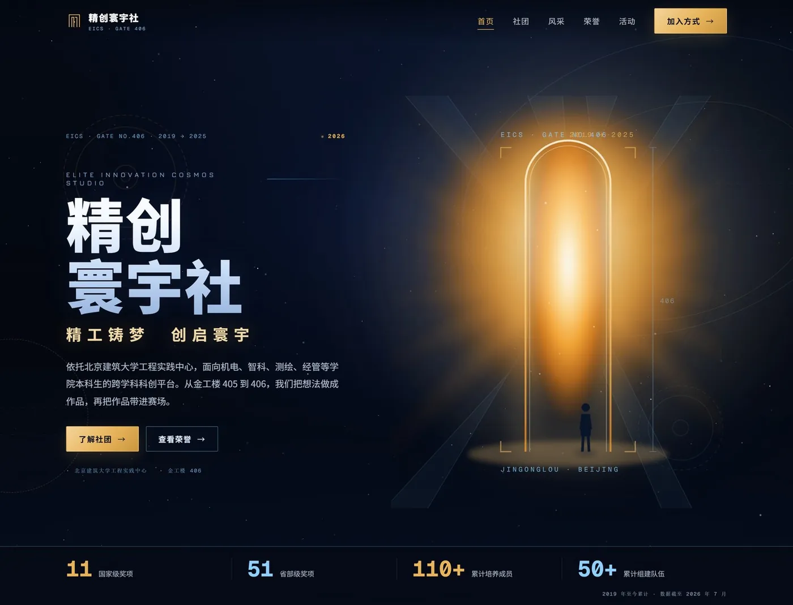
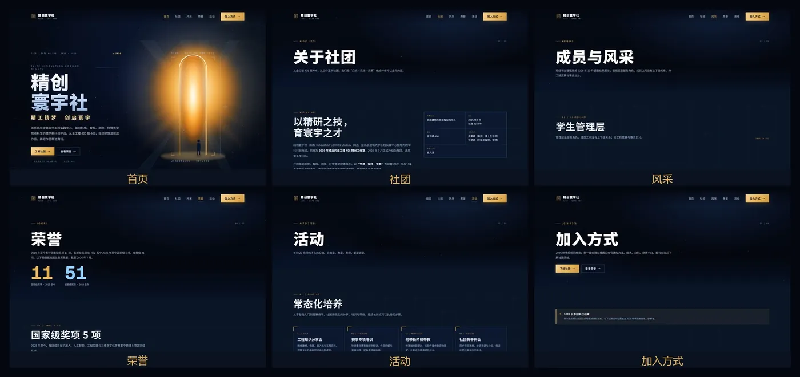
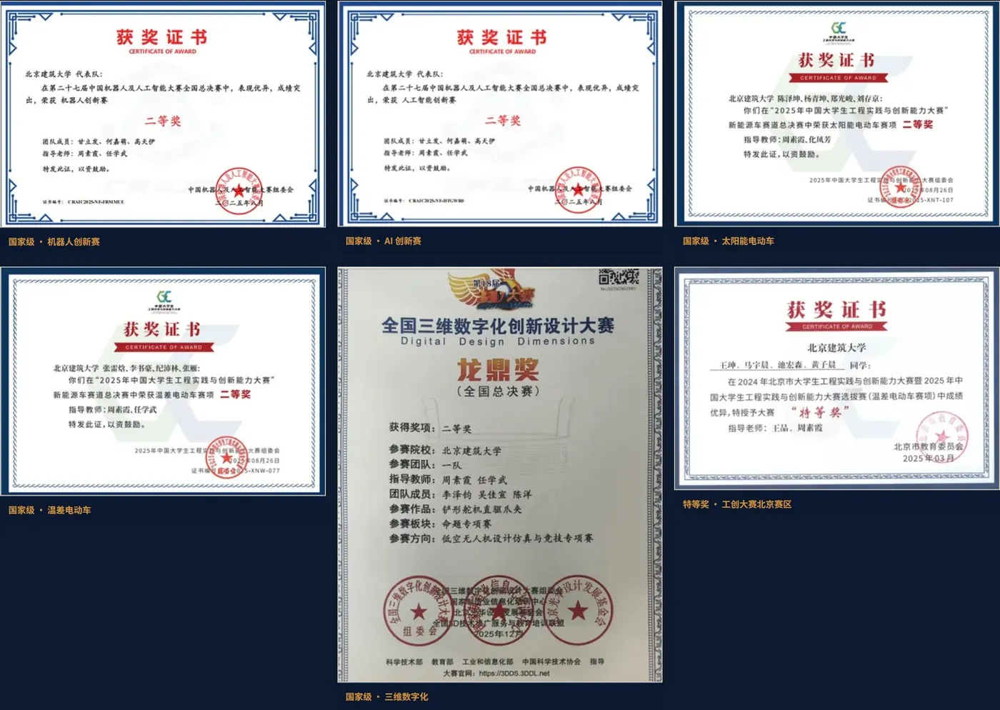
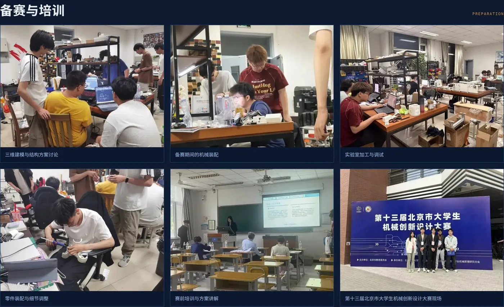
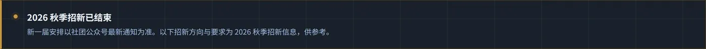

精创寰宇社官方网站（https://eics406.github.io/）现已上线。网站由社团成员完成资料整理、文案撰写、设计与搭建，设首页、社团、风采、荣誉、活动、加入方式六个页面，收录 2019 年至今的社团沿革、奖项与活动记录。
网址：https://eics406.github.io/ · 微信内打开：点右上角「…」→「在浏览器打开」，也可以复制链接到浏览器。

一、建站缘由：社团资料需要固定存储地址
七年来，社团资料数量不断增加且存放分散：公众号推送会被后续内容覆盖，群文件会过期，证书扫描件存储在个人设备中。新同学了解社团主要依靠口口相传和翻阅历史消息。
网站的定位是长期使用的固定入口，服务三类需求：
- 新同学第一次接触社团，可在几分钟内了解社团定位；
- 老师、赛事方、兄弟社团可查询完整的沿革、战绩和活动记录；
- 社团将 2019 年以来的资料统一存储，便于长期保存。
因此，该网站并非单页招新页面，而是计划长期使用的官方网站。
二、六个页面的内容设置

首页。页面首屏介绍社团定位：依托北京建筑大学工程实践中心，面向机电、智科、测绘、经管等学院本科生的跨学科科创平台。数据带展示 2019 年至今累计数据：国家级奖项 11 项、省部级 51 项、培养成员 110+、组建队伍 50+。
荣誉页。列出 2025 年至今的国家级 5 项、省部级 21 项获奖记录；证书墙含精选 6 张与完整 26 张，支持放大查看与左右切换，电脑端按 Esc 关闭。

活动页。18 张实拍照片分为备赛与培训、新手村 PCB、作品与赛场三组；往期报道链接至公众号原文与站内动态档案。

社团页与风采页。社团页按时间线呈现沿革：2019 年金工楼 405 精创工作室成立，2025 年 9 月升级为精创寰宇社并迁至 406，2026 年启动内部科创知识库。风采页展示 2026 年 10 月调整后的现任学生管理层，管理层是服务角色，成员之间没有上下级，分工按竞赛与事务划分。
加入方式页。汇总招新状态、需要的方向、可以争取的培养内容与常见问题。2026 秋季招新已结束，新一届安排以社团公众号通知为准。
三、内容规范与技术处理
数据标注统计口径。11 项国家级、51 项省部级为 2019 年至今累计（数据截至 2026 年 7 月）；5 项国家级、21 项省部级为 2025 年至今数据。两组数据不合并计算，也不混排展示。
隐私保护。风采页不公开个人照片，仅展示姓名、班级与分工；全站不含电话号码与群聊入口。
移动端适配。图片按屏幕尺寸分发，支持弱网加载；配置抽屉导航与表格横向滑动；系统开启「减少动效」时，动画自动关闭。
异常页面处理。输错地址会显示「这扇门不存在」提示页，并提供返回首页的链接。

四、访问方式
网址：https://eics406.github.io/
微信内：点右上角「…」→「在浏览器打开」，或复制链接到浏览器；电脑、手机均可访问，无需登录。也可直接点击文末「阅读原文」打开。
网站后续将更新下一次招新、下一场赛事及新作品的进展。
精工铸梦，创启寰宇。
精创寰宇社 · 金工楼 406
2026.11
2026 秋季招新已经结束，新一届安排在社团公众号「精创寰宇社EICS」通知。站内不设报名入口，想先了解社团，从首页开始就好。